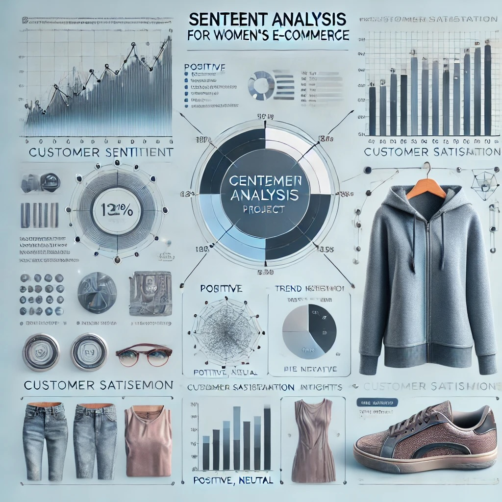

This project leverages machine learning to predict credit card cancellations, helping a major U.S. bank proactively retain at-risk customers. Using customer data insights and a high-performing Quadratic Discriminant Analysis model, we identify patterns in cancellations, informing targeted retention strategies to enhance loyalty and revenue.

Designed and implemented a comprehensive database system tailored for a public library, focusing on efficient membership management, borrowing processes, and analytics. This project, created in MySQL Workbench, optimizes data integrity and retrieval, enhances reporting capabilities, and integrates an alert system for overdue materials, facilitating data-driven decision-making for library staff.